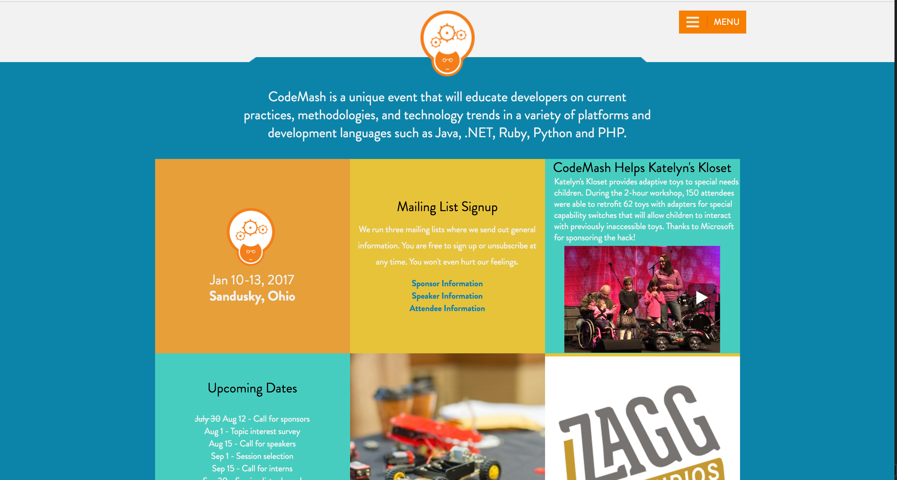
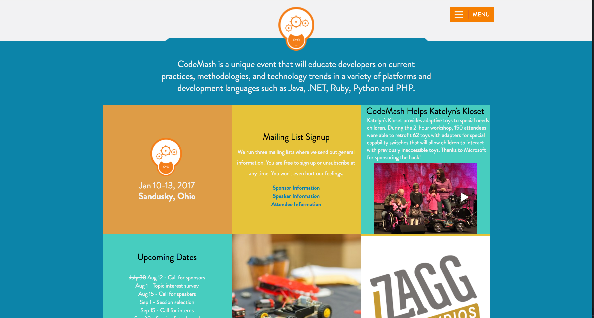

Picture This
Automated Visual Regression Testing
What is Visual Regression Testing?
Why do we need VRT?
- Browsers are unreliable
- Too many environments
- BrowserStack Supports 987 enviornments
Why aren't we all doing it?
So many bad tools

Well..
not bad,
just meant for other things
Some Other Tools
The Tools
Compatriot
The Process
Lets Talk Image Diffing
How do we do it?
It's sooo simple!!!
Example
|  |  | |
|
Base |
Variable |
Diff |